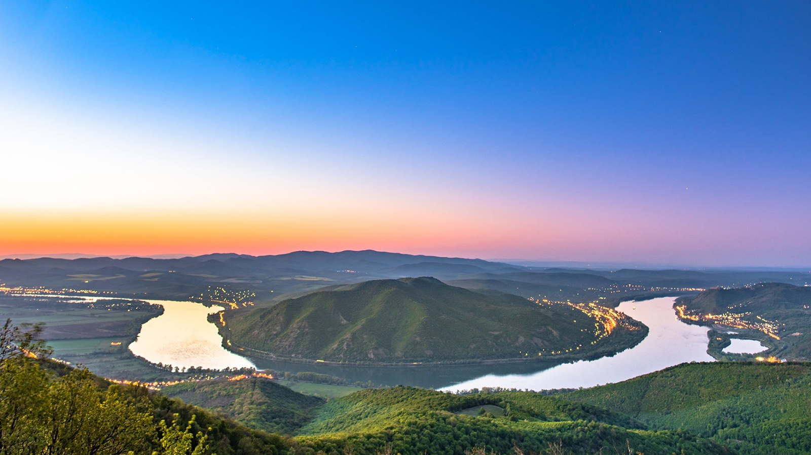
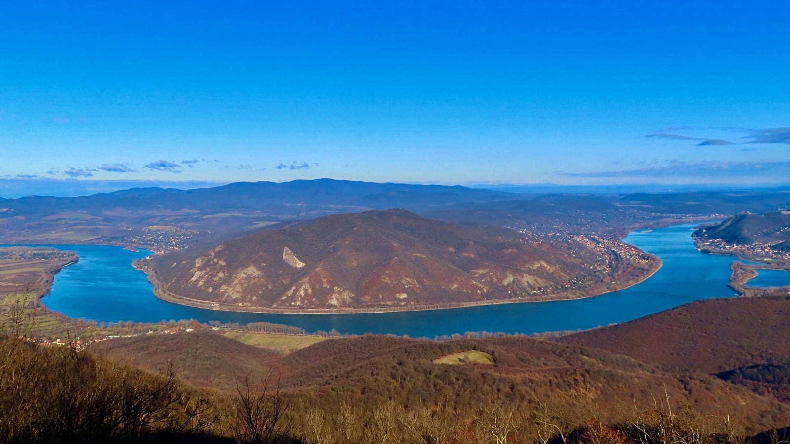
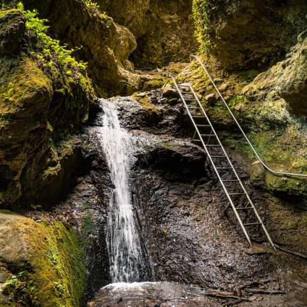
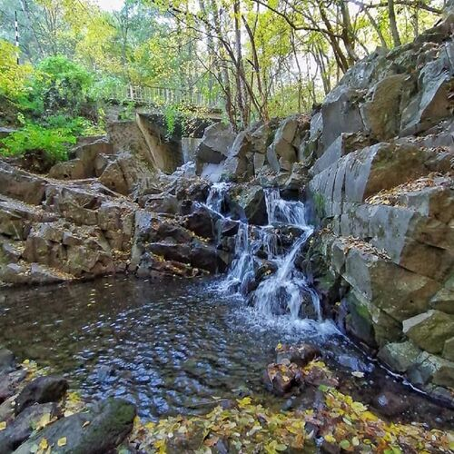

A Prédikálószék a Dunakanyar egyik legszebb kilátópontja, a Visegrádi-hegységben található. 639 méter magas, és tetejéről lenyűgöző panoráma nyílik a Dunára, a Börzsönyre és a Pilisre. A csúcson egy modern kilátó is áll, amely 2016-ban épült, hogy még jobb rálátást biztosítson a környékre. Több túraútvonal is vezet ide, például a Dömösről induló piros háromszög jelzésű ösvény. A hely népszerű kirándulóhely, ahol a természet szerelmesei gyönyörködhetnek a táj szépségében.

